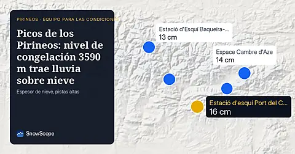
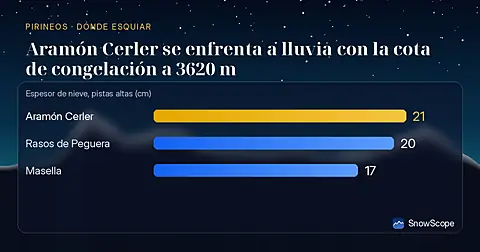
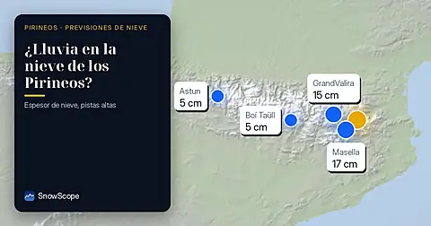
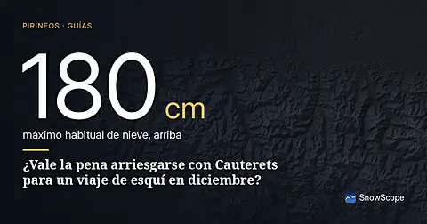
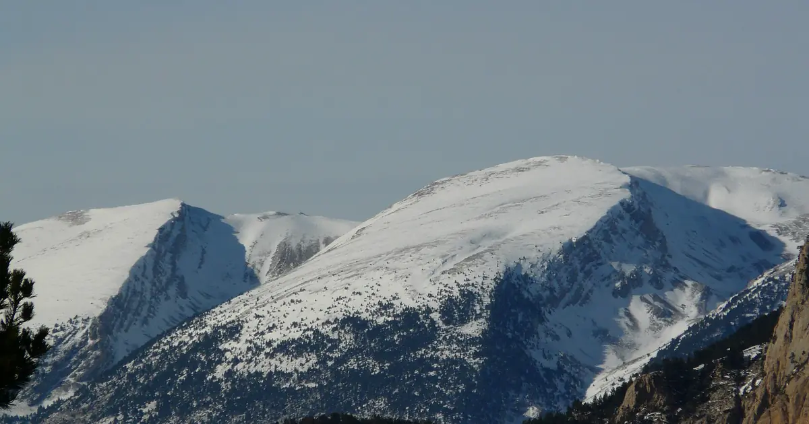
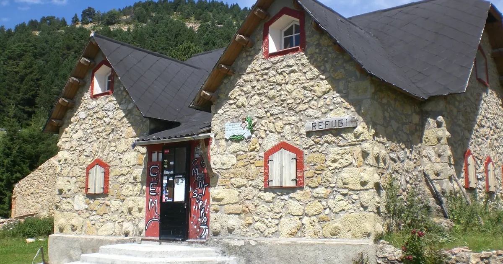

Partes de nieve · Pirineos
Pirineos: En los próximos días la isoterma de 0 °C en los Pirineos debería moverse entre 1900 m y 3670 m, según nuestra previsión. En el momento más …
La nieve por país hoy
Los países más blancos hoy: Francia (13 %), Andorra (7 %) y España (0 %).
Más nieve nueva en la semana: Francia (125 cm), Andorra (9 cm) y España (5 cm).
Destacados

Menos días de nieve en los 120 puntos estudiados en los Pirineos desde 1980-81, sobre todo por debajo de 1500 m: nuestra serie de 46 inviernos.

A menudo se vende Grandvalira como una opción económica para esquiar en diciembre, pero la nieve natural en la base promedia solo 9 cm en nuestros inviernos pasados.

El nivel de congelación alcanza 3590 m en los Pirineos el 9 de noviembre, trayendo lluvia sobre nieve a las laderas superiores delgadas. Lleva capas impermeables y polainas.

La cota de congelación alcanza 3620 m el domingo 8 de noviembre, por encima de los 2618 m de cumbre de Aramón Cerler, trayendo riesgo de lluvia sobre nieve (pronóstico de datos del 6 de noviembre).

El nivel de congelación alcanza 3400m–3600m durante los próximos tres días, trayendo lluvia al manto de nieve del 09 al 11 de noviembre. Previsión del 08 de noviembre.
¿Lluvia o nieve en los Pirineos? La cota de nieve sube a 3400 m en Les Angles (18 de noviembre)

En los próximos días la isoterma de 0 °C en los Pirineos debería moverse entre 1900 m y 3670 m, según nuestra previsión. En el momento más templado del día la cota de nieve, unos 300 m más abajo, sube a 3400 m en Les Angles el jueves 19 de noviembre. En la cota de nieve muchas veces se ve: lluvia en el aparcamiento, nieve desde el primer telesilla.
Cota de nieve, estación por estación
Boí Taüll (base 2039 m, cima 2747 m): el 19 de noviembre la cota de nieve sube a unos 3000 m, más alta que la cima, así que la lluvia o la nieve húmeda llegarían a toda la montaña.
En Ordino-Arcalis (base 1943 m, cima 2626 m) la cota de nieve llega a unos 2900 m el 19 de noviembre, por encima de la cima: si llueve, llueve en todas partes.


Boí Taüll empieza a 2039 m y supera a Baqueira Beret en el precio del forfait, aunque la nieve de principios de diciembre requiere algo de paciencia.

Cauterets ofrece 25 km de pistas por 46 EUR, pero nuestro histórico de nieve muestra que la mejor oportunidad para encontrar cobertura es la última semana de diciembre.

Compara Grandvalira y estaciones españolas en diciembre de 2026 en cuanto a espesores de nieve, cotas de remontes y precios desde 49,00 EUR.

Para una semana de esquí familiar a buen precio en diciembre en Astún-Candanchú, apunta a finales de mes, cuando las pistas altas tienen buena nieve en el 67 % de los inviernos pasados.

¿Planeas un viaje en diciembre a Baqueira Beret? Mira nuestro historial de nieve, precios de forfaits desde 70,00 € para un pase de 1 día, y cómo se compara con Astún-Candanchú.


¿Hay más nieve que hace un año? Comparamos hoy con el 11 de noviembre del invierno pasado en 4 estaciones en los Pirineos: 0 tienen más nieve ahora, …

Según nuestro modelo de nieve y la previsión, el día en los Pirineos trae nieve fina de principio de temporada y aire templado que puede dejar …

Cuánto tiempo estuvieron blancos los Pirineos cada invierno desde 2000-01, vistos por satélite, y el espesor de nieve en 10 estaciones con series largas. Tres inviernos flojos seguidos terminaron en 2025-26; este otoño ha empezado con normalidad.

La isoterma de 0 °C en los Pirineos, próximos días: 2420 m a 3710 m. La cota de nieve, unos 300 m más abajo, alcanza su máximo de 3400 m en Masella …

Andorra no tiene un gran aeropuerto: cómo llegar a Grandvalira desde Barcelona o Toulouse, el túnel de Envalira, la carretera CG2 y los aparcamientos.

Gourette y Cauterets frente a frente: altitudes, nieve habitual por mes, mejores semanas y cómo llegar, a partir de 46 inviernos pasados.

Baqueira-Beret está en el Valle de Arán, en la vertiente atlántica del Pirineo. Qué significa para su nieve, comprobado con 46 inviernos pasados frente a La Molina, y cuándo ir.

Cómo aprovechar un día en Luz-Ardiden, una pequeña estación sobre Luz-Saint-Sauveur en los Altos Pirineos: la carretera, los dos sectores, la nieve de 46 inviernos pasados y qué semanas elegir.

0 cm a 2.052 m el 7 de noviembre, como en muchos inviernos pasados. El invierno pasado alcanzó un máximo de 100,6 cm. Gráfico interactivo y datos.


Rasos de Peguera recibió 15 cm de nieve nueva en las últimas 72 horas. Ahora tiene unos 20 cm en las pistas altas, según nuestro modelo de nieve.

Combinamos el espesor de nieve de hoy, la nieve nueva de las últimas 72 horas y la previsión para elegir Rasos de Peguera, Aramón Cerler y Masella. …


Rasos de Peguera recibió 17 cm de nieve nueva en las últimas 72 horas, 17 cm de ellos en las últimas 24 horas. Ahora tiene unos 13 cm en las pistas …

Combinamos el espesor de nieve de hoy, la nieve nueva de las últimas 72 horas y la previsión para elegir Masella, Estació d'esquí de Port-Ainé y …